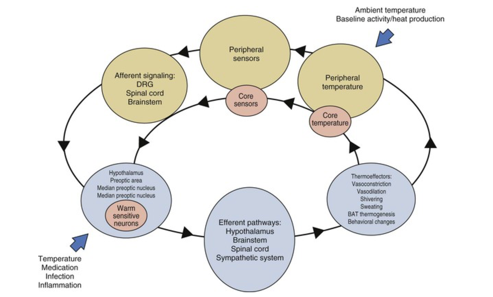
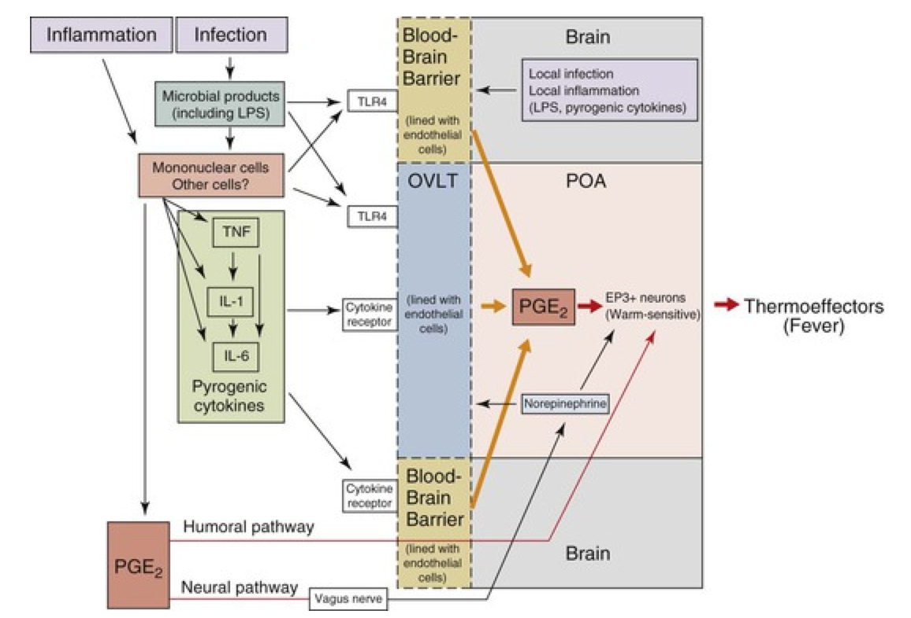
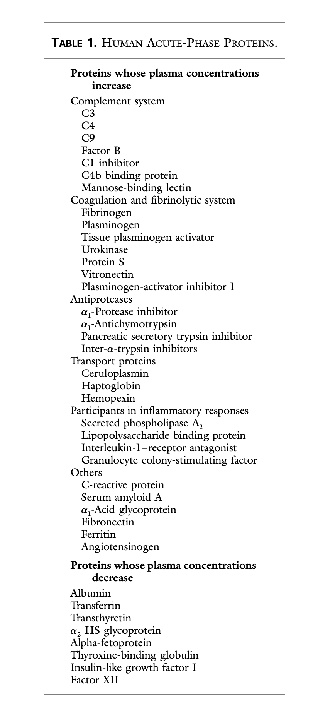
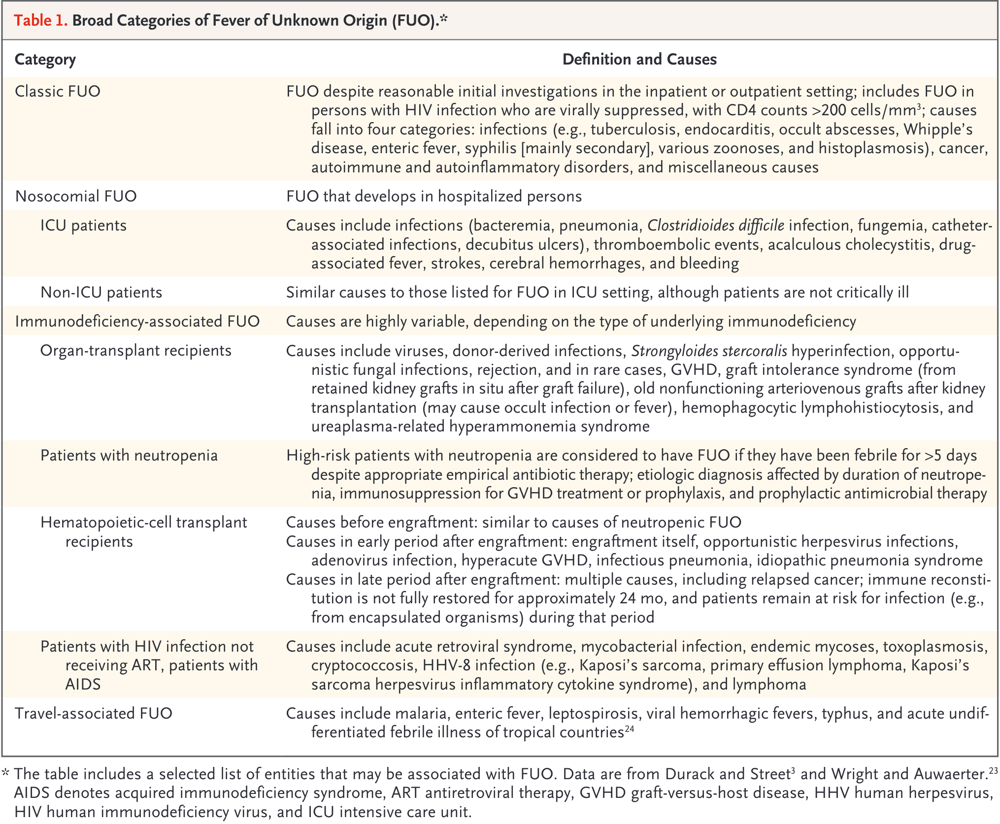
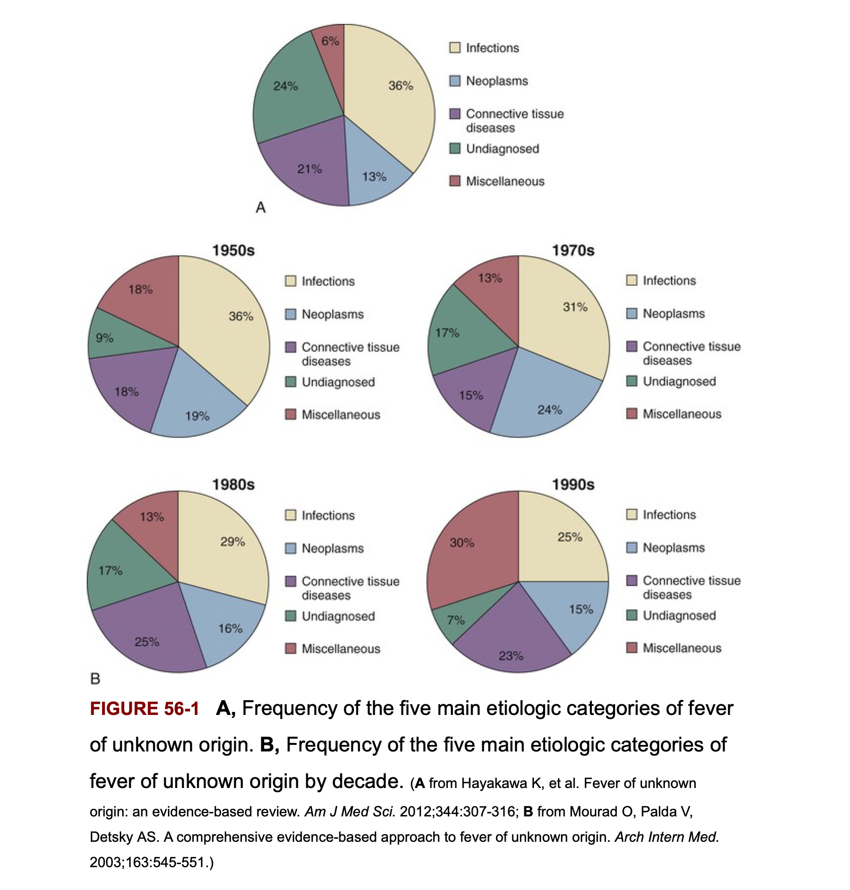
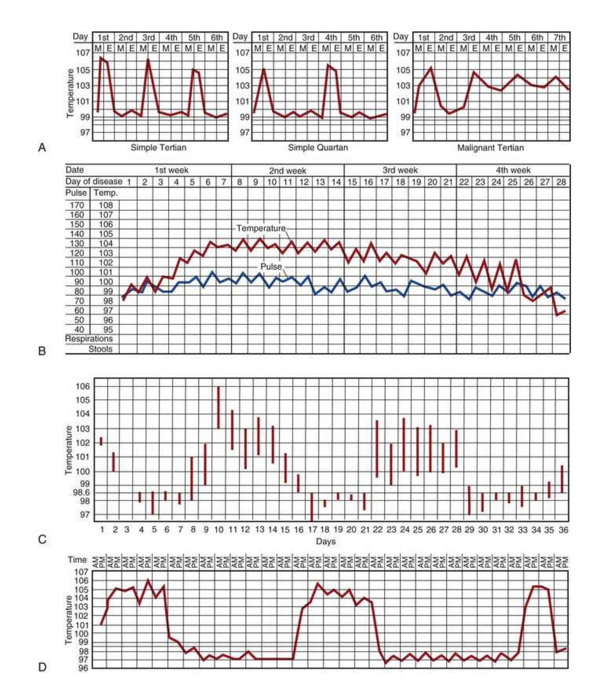
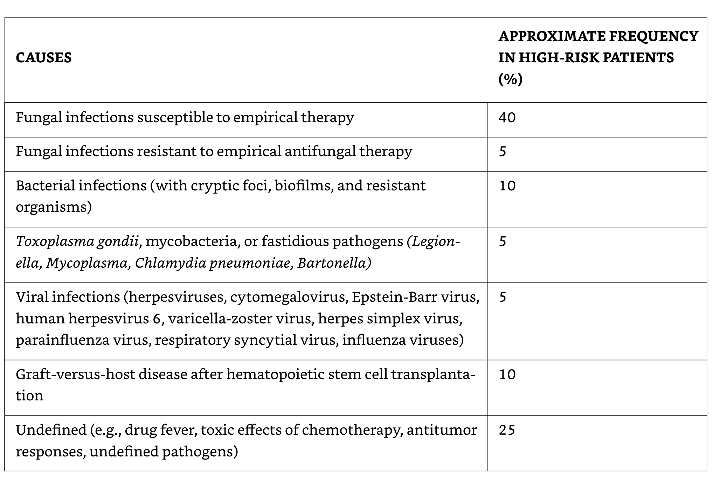
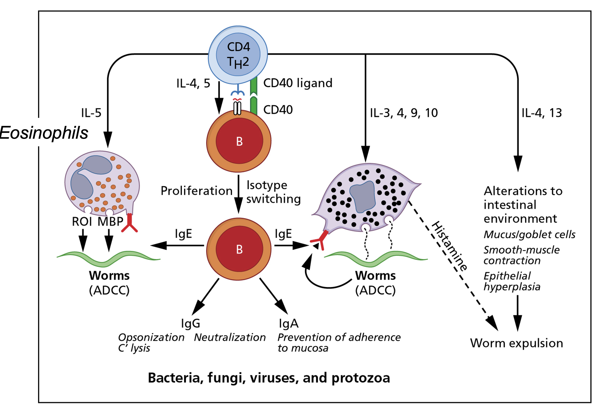
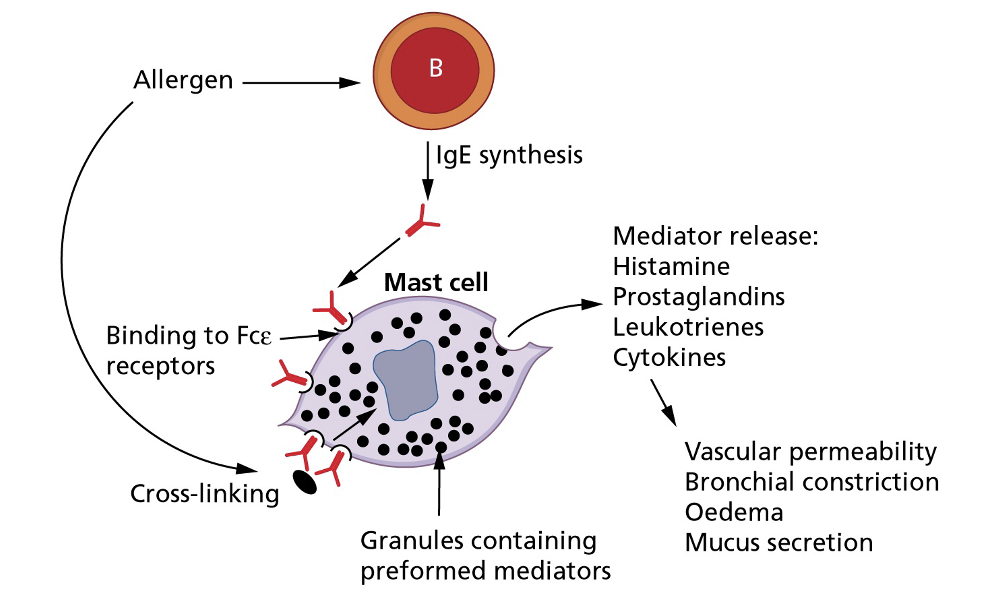
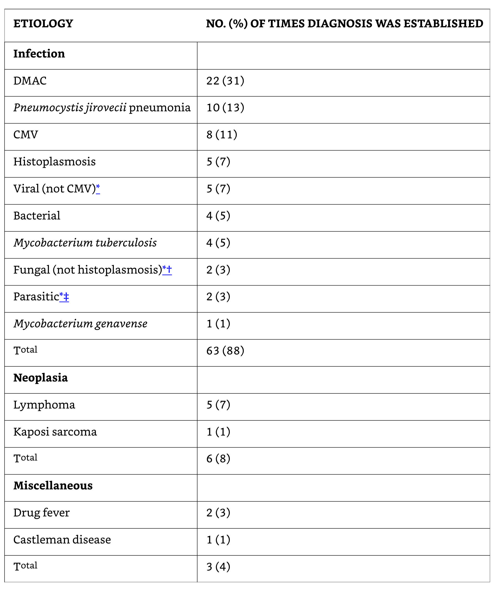

Fever of Unknown Origin (FUO)
Fever of unknown origin (FUO)
Russell Lewis
Associate Professor, Infectious Diseases
Department of Molecular Medicine
MEP 2491 Infectious Diseases
13 March 2023
Objectives
The history of fever
- 10th Century BCE Persian Physician Akhawayni defined a system for fever curves in Hidāyat al-Muta’allimīn fī al-Tibb (The Student’s Handbook of Medicine)
- Hippocratic physicians proposed that body temperature, and physiologic harmony in general, involved a delicate balance among four corporal humors—blood, phlegm, black bile, and yellow bile. Fever was due to excess of yellow bile (many infections caused jaundice)
- Galen: many types of fever developed from putrification of humors.
- Middle ages: demonic possession
- 18th century (Harvey’s discovery of circulation)- friction of blood flow through body causing fermentation and putrification in intestines
- Claude Bernard in the 19th century- metabolic processes in the body
Febris- Roman Goddess of Fever
The legend of Febris was said to center around the haunting marshes of Camagna in Southern Italy where like clockwork every year, the people would become deathly ill with a mysterious disease. She was so feared by the Romans that the suffering population had created a cult to Febris. They went so far as to wear protective amulets and build her temples in order to worship her to win her favour.
Galileo developed the room thermometer in Padova

Fever in modern medicine
Wunderlich’s pioneering studies of thermometry-normal 37°C
Since the 19th century, humans have become gradually colder-0.05 to 0.5°C per decade
Current normal range is 36.3 to 36.5°C
Thermal homeostasis

Infection-associated fever

Sequelae of fever
- Phylogenetic conservation of fever over the millennia suggests fever is beneficial
- Most pathogenic bacteria are mesophiles (35°C ideal for growth)
- Fever generates hepatic iron-sequestering compounds the bind free iron necessary for microbial replication
Acute phase proteins
Acute phase phenomena
Epidemiology of FUO- Definitions

Classic FUO
- Definition:
> 38.3°C > 3 weeks
>2 separate outpatient visits with diagnostic investigations
>2 visits in hospital of 3 days with diagnostic investigations
However, these definitions are largely subjective
- Leading causes:
Cancer
Infections
Inflammatory conditions
Undiagnosed habitual hyperthermia
Frequency of the 5 main etiologic categories of FUO
Infectious causes decrease in patients above age 65 years
Classic FUO- Infectious Etiology
- Occult abscess
- Endocarditis
- Tuberculosis
- Complicated urinary tract infections
Classic FUO work-up
- Medical history emphasis:
Travel
Contacts
Animal and insect exposure
Medications
Immunizations
Family history
Cardiac valve disorder
- Examination emphasis
- Fundi, oropharynx, temporal artery, abdomen, lymph nodes, spleen, joints, skin, nails, genitalia, rectum or prostate, lower limb deep veins
- Investigation emphasis:
- Imaging, biopsies, sedimentation rate, skin tests
Rare and miscellaneous causes of fever
Distinctive fever patterns
A. Maleria; B. Typhoid fever with relative bradycardia; C. Hodgkin’s disease (Pel-Ebstein pattern);
D. Borreliosis (relapsing fever pattern)
Classic FUO in infants and children
- Respiratory tract infections
- Other infections: UTIs, brucellosis, tuberculosis, bartonellosis
- Kawasaki disease (age < 5 years)
- Inflammatory bowel diseases
- Still’s disease (juvenile rheumatoid arthritis)
- However, connective tissue diseases and cancers are generally rare in children
- Joint involvement is an important sign of a potentially serious disorder- e.g., connective tissue disease, endocarditis, leukemia
Classic FUO in elderly patients
- In developed countries: connective tissue diseases > infections
Temporal arteritis
Polymyalgia rheumatic syndromes
- Diagnoses are frequently missed because symptoms are subacute and non-specific
- Infections
intraabdominal abscess
Complicated UTIs
Tuberculosis
Endocarditis
Returning travellers
Nosocomial (Health-Care Associated) FUO
- Leading causes:
Drug fever
Post-operative complications (e.g., occult abscess)
Decubitus ulcers
Septic thrombophlebitis
Recurrent pulmonary emboli
Myocardial infarction
Cancer
Blood transfusion
Clostridium difficile colitis
Fever in post-operative patients
- Although more than 1/3 of patients may manifest fever in first 5 days surgery, < 10% of febrile patients have an identified source
- Physiological response to surgically-induced tissue injury with release of pyrogenic cytokines and interleukins rather than result of infection
FUO in ICU patients
- Early fevers are common, often non-infectious, associated with good prognosis
- Prolonged fever- poorer prognosis
- Sinusitis as a complication of mechanical ventilation, supine position, feeding tubes
- Other causes are similar to nosocomial infections
Abscess
Drug fever
postoperative complications
Septic thrombophlebitis
Recurrent pulmonary emboli
Myocardial infarction
FUO in stroke patients
- Non-infective fevers are commonly seen in patients with intracranial mass effects and occur earlier after stroke than infection
- UTI are common related to urinary catheterization
FUO in neutropenic patients
ANC= Total WBC x (% Segs + % Bands)
ANC of < 500 cells/mm3 or an ANC that is expected to decrease to < 500 cells/mm3 during the next 48 h.
- The term ‘’profound’’ is sometimes used to describe neutropenia in which the ANC is < 100 cells/mm3
Fever occurs frequently during chemotherapy-induced neutropenia:
10%–50% of patients with solid tumors
80% of those with hematologic malignancies will develop fever during >1 chemotherapy cycle associated with neutropenia
Most patients will have no infectious etiology documented.
Signs of inflammation are notoriously absent other than fever
Clinical manifestations of infection related to absolute neutrophil count (ANC)
| Signs and symptoms | Infection | % of patients with ANC< 100 | % of patients with ANC>1000 |
|---|---|---|---|
| Fever | Overall | 98 | 76 |
| Bacteremia | Overall | 43 | 13 |
| Fluctuance | Anorectal | 8 | 67 |
| Exudate | Skin | 5 | 92 |
| Purulent sputum | Pneumonia | 8 | 84 |
| Pyuria | UTI | 11 | 97 |
Possible causes of fever in neutropenic patients not responding to broad-spectrum antibiotics
Cell-mediated immunity-1
Cell-mediated immunity-2
Cell-mediated immunity-Drug allergy
Infections in immunocompromised hosts
Naproxen (NSIAD) fever suppression test
HIV-related FUO
- Primary phase of infection characterized by mononucleosis-like illness where fever is common, may be undiagnosed if it precedes seroconversion
- In later phases of untreated HIV, episodes of fever become common and often signify a superimposed illness- e.g., opportunistic infections that manifest in atypical fashion
- Once highly-active antiretroviral therapy (HAART) is started and HIC viral load is effectively suppressed, the frequency of FUO falls markedly
Etiology of fever in HIV-Associated FUO (n=70)

Diagnosis of FUO
General diagnostic evaluation of FUO
| Comprehensive history |
|---|
| Repeated physical exams |
| Complete blood count |
| Routine blood chemistry |
| Urinalysis including microscopic examination |
| Chest radiograph |
| Erythrocyte sedimentation rate |
| Antinuclear antibodies |
| Rheumatoid factor |
| Blood cultures- three separate specimens in the absence of antimicrobial therapy |
| CMV IgM antibodies or viral detection in blood |
| Heterophil antibody test in children and young adults |
| Tuberculin skin test |
| Computed tomography of abdomen, pelvis and other sites |
| MRI/Radionucleotide scans |
| HIV antibodies or viral detection assay |
| Further evaluation of any abnormality detected by above tests |
| Various duplex imaging of lower limbs |
Patient history
- Helps guide choice of initial laboratory investigations
- Particular attention should be give to:
recent travel
exposure to pets and other animals
work environment
recent contact with people with similar symptoms
family history (e.g., familial Mediterranean fever)
- Prior history of FUO
- Previously diagnosed conditions
lymphoma
rheumatic fever
intraabdominal disorders
- Complete list of medications